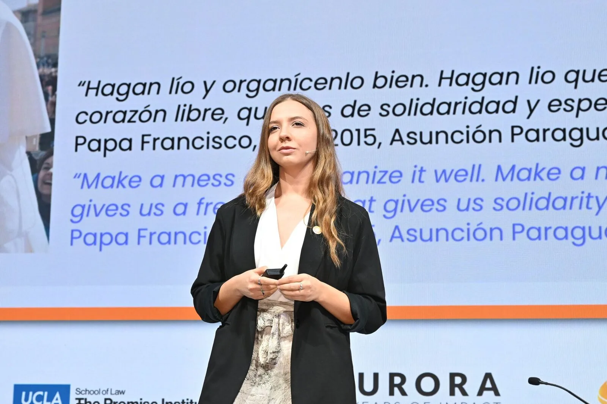
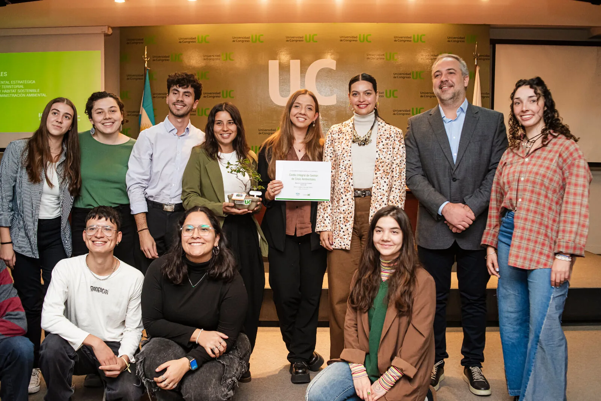
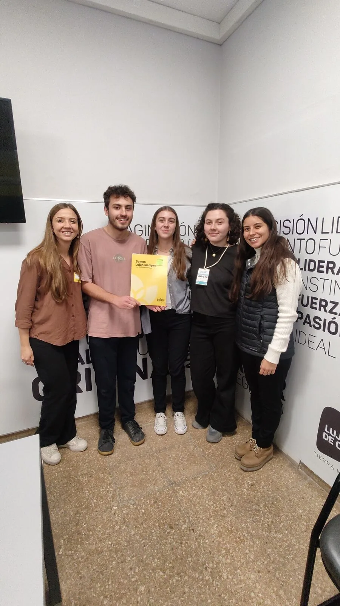
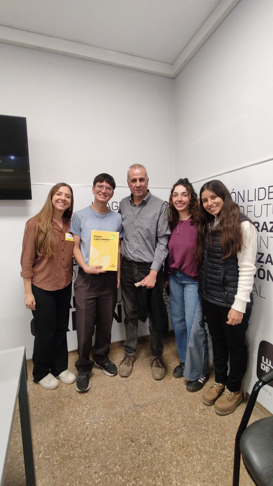
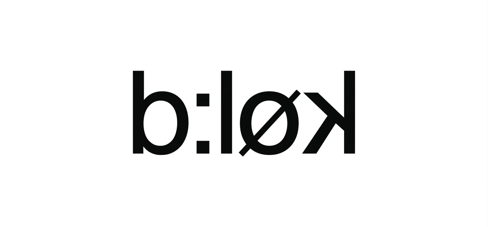
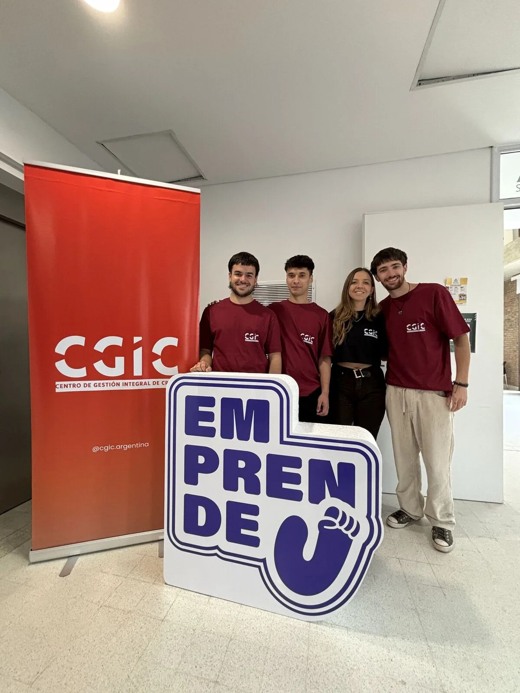
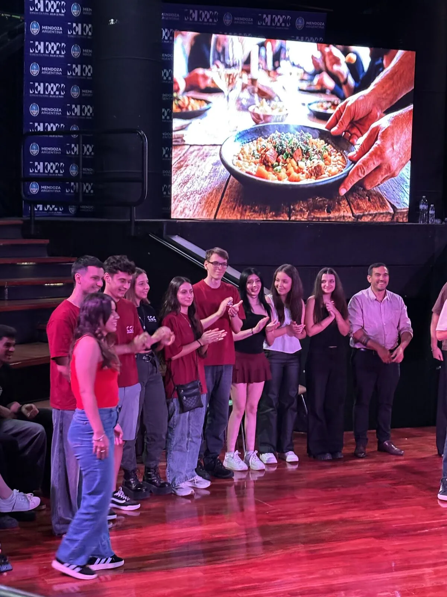

Antecedentes, reconocimientos e informes que documentan nuestro camino.
Participación en el panel “Generación Emergente”, donde Ana Giménez Pozzoli compartió la experiencia que dio origen a CGIC. Evento organizado por Aurora Humanitarian Initiative y UCLA.

Reconocimiento en la XXIII edición, en la categoría “Jóvenes por el Clima”, otorgado por la Universidad de Congreso bajo el lema “Por el cuidado de la Casa Común”.

En articulación con Fundación Lupa, implementación de un proyecto orientado a hábitat y espacios seguros, con financiamiento de la Municipalidad de Luján de Cuyo y Bloomberg Philanthropy.

Junto a Asociación Civil Oikos Red Ambiental, desarrollo de un sistema enfocado en la gestión de riesgos climáticos dentro del programa de Sistemas para la Gestión.

Articulación con la agencia canadiense de diseño Block Design para el co-diseño de un sistema modular de mobiliario con materiales reciclados, orientado a reorganizar la vida cotidiana en contextos de crisis climática o humanitaria.

Semifinalistas entre 416 proyectos a nivel nacional, siendo uno de los 5 seleccionados de Mendoza para participar del Bootcamp en Córdoba.

Tercer puesto entre 16 proyectos con “Acción del Sur Blockchain”, una solución para la trazabilidad de donaciones en contextos de emergencia.
